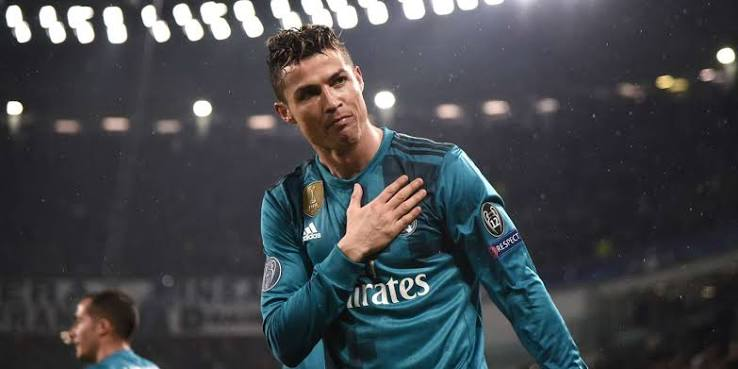
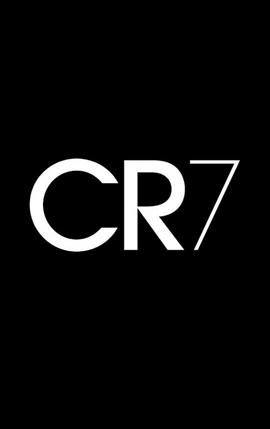
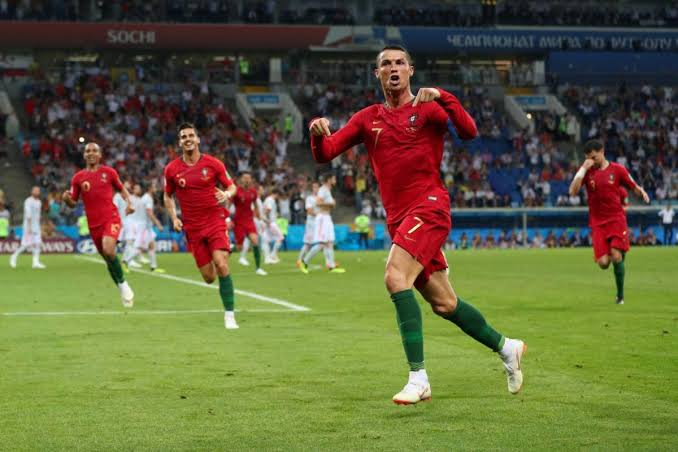
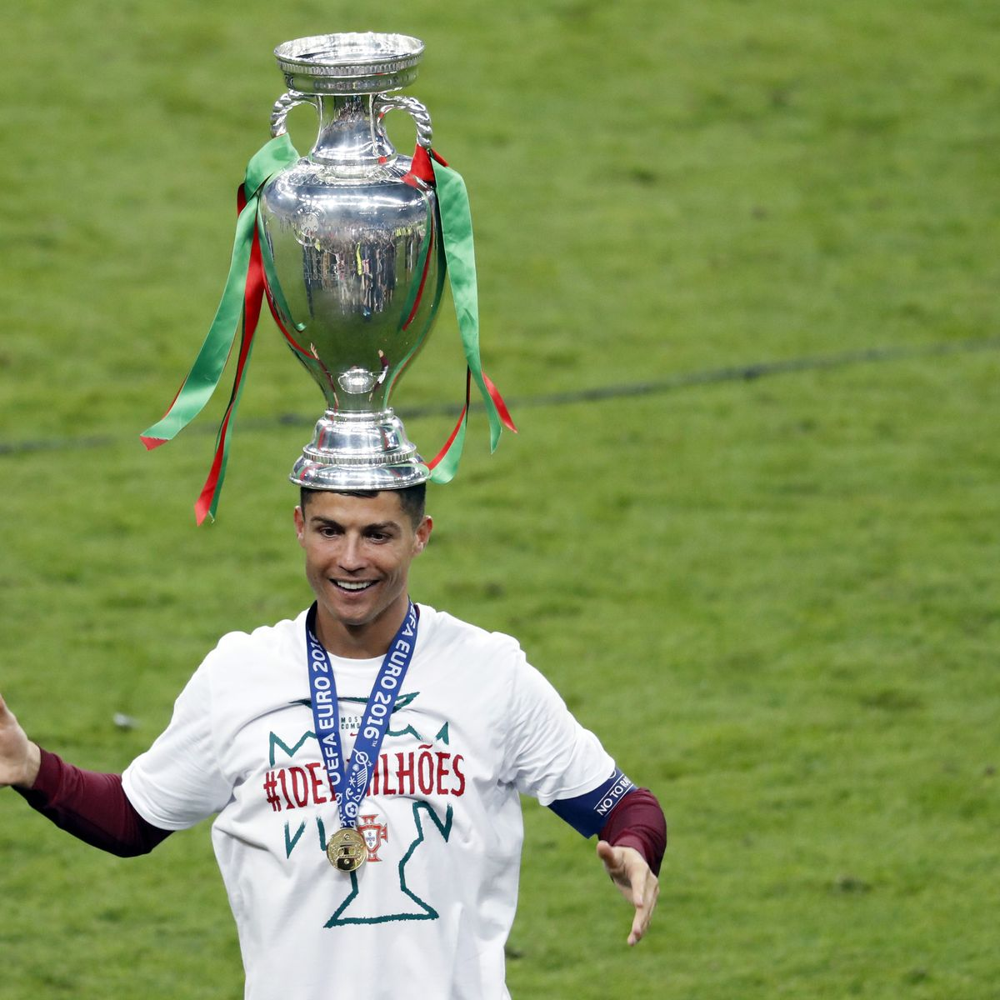

Le retourné contre la Juventus (2018)
Son but le plus célèbre en Ligue des Champions avec le Real Madrid, applaudi par tout le stade.


Son but le plus célèbre en Ligue des Champions avec le Real Madrid, applaudi par tout le stade.

Un match légendaire en Coupe du Monde avec le coup franc à la dernière minute.

Le premier grand trophée de l'histoire du Portugal gagné au Stade de France.
Il a gagné le Ballon d'Or en 2008, 2013, 2014, 2016 et 2017.
Une gagnée avec Manchester United et quatre avec le Real Madrid (dont trois à la suite).
Il détient le record de buts en Ligue des Champions (140 buts) et en sélection nationale.
Les grandes étapes de la carrière de CR7.
Son arrivée au Real Madrid en 2009 devant 80 000 supporters au Bernabéu, ses 450 buts en 438 matchs avec Madrid et le cap des 900 buts dépassé récemment.
La fin de saison avec son club d'Al-Nassr, les prochains matchs avec la sélection du Portugal et la course pour atteindre la barre historique des 1000 buts en carrière.